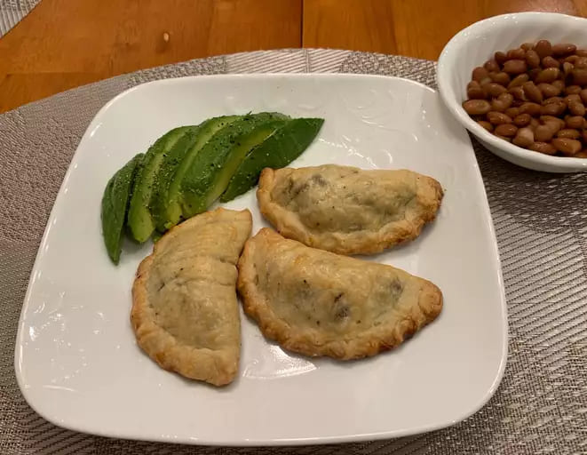

Empanadas de Carne

Plato terminado de empanadas de carne
Las empanadas argentinas tienen forma de semicírculo y están cerradas por un repulgue, que muchas veces presenta distintas formas que permiten identificar el sabor del relleno. El relleno varía de provincia en provincia, aunque los más comunes son carne vacuna, pollo, humita, jamón y queso y verdura con queso o salsa blanca
Ingredientes
- 12 tapas para empanadas
- 1/2 kg. de carne picada
- 2 cebollas
- 1/2 pimiento morrón rojo
Pasos a seguir
- En una olla con aceite caliente agregar la cebolla y el morrón. Dejar dorar unos minutos y cuando estén a medio cocer (cebolla transparente), agregar el ajo y un poco de sal y pimienta.
- Subir el fuego y agregar de una toda la carne picada. Mover la carne para que no quede pegada. Cuando la carne esté sellada agregar el tomate en cubos y las 2 cdas de puré de tomates. Condimentar con pimenton y comino, un poco más de sal y pimienta y mezclar bien. Tapar (no del todo, dejar un pequeño hueco) y dejar cocinar una media hora revolviendo de a poco.
- Sacar del fuego y dejar enfriar en la olla. Agregar las aceitunas picadas y mezclar bien. (En este paso pueden agregar cualquier otra cosa que le quieran poner: huevo duro, pasas, papa, etc)
- Repartir el relleno en las tapas de empanada, y cerrar con un repulgue tradicional. Antes de meterlas en el horno pueden pintarlas con huevo, pero es muy a gusto y opcional.